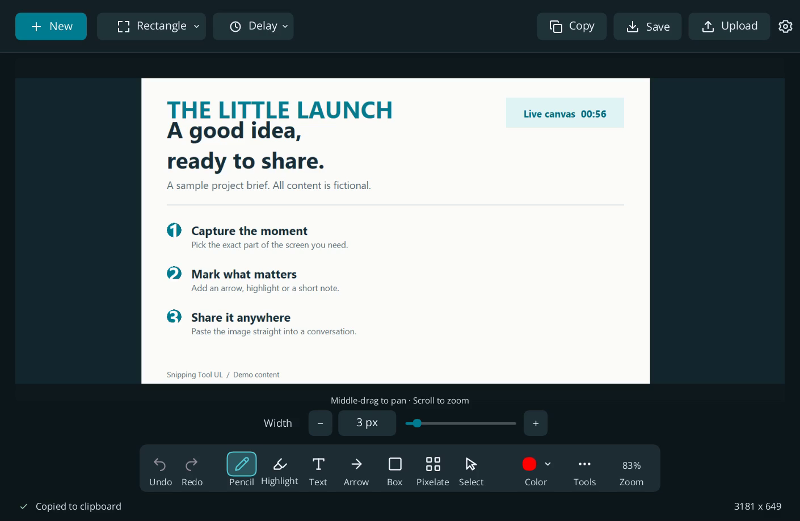
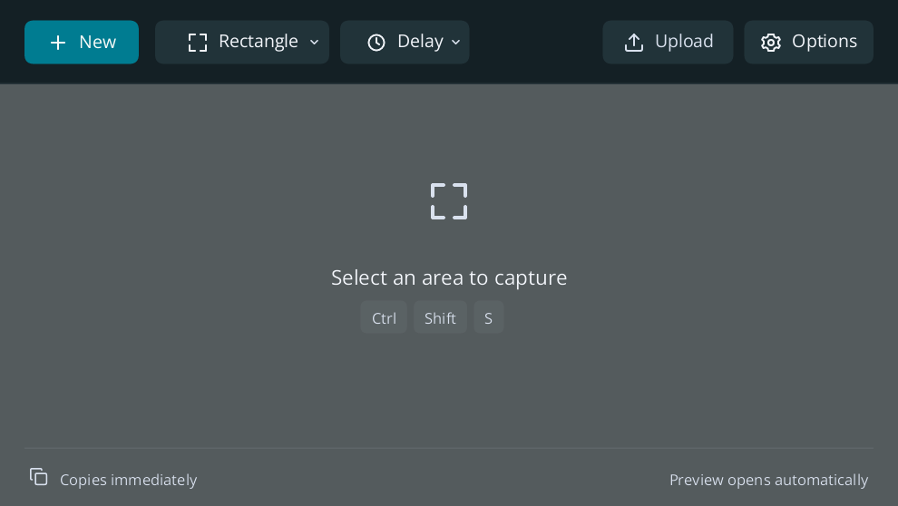

Capture. Copy.
Keep going.
A lightweight Windows snipping tool built in Rust. Take a screenshot, paste it immediately, and keep the preview open for edits.
Windows 11 · x64 · Portable ZIP · MIT licensed

A little tool. A complete workflow.
Ultralight in performance, not features. Familiar capture controls, a clear editor, and the essentials within reach.
Captioned tour made from real native app captures, with a fictional brief. Crops and cuts frame the interface; no UI actions are simulated. Download video
Snip once.
Keep working.
Press Ctrl + Shift + S, or choose New. Selecting a region copies the image immediately and opens its preview.

Capture a still moment
Region, window and full-screen capture. Selection uses a frozen snapshot, with 3, 5 or 10-second timers and configurable hotkeys.
Make the point clear
Pencil, arrows, highlights, shapes, text, pixelation and numbered steps. Adjust width on the toolbar. Undo and redo stay close.
Move around without losing detail
Wheel zoom follows your pointer. Middle-mouse drag pans the image. Saving and copying keep the capture’s original resolution.
Share when you choose
One-click image links through Catbox, Freeimage.host or temporary Litterbox. No personal API key needed. Uploads are public and always an explicit action.
Keep the extras optional
Local OCR, pinning, history, auto-save and Windows Start integration. History and auto-save are off by default; closing can quit or keep the tray active.
Start with a ZIP.
No installer needed for portable use. The optional current-user installer can add UL alongside Windows Snipping Tool, or make UL your Snipping Tool entry in Start.
Get the Windows preview- Extract the download.
Keep the executable and license files together. - Run
snipping-tool-ul.exe.
Choose New or use the capture hotkey. - Make it yours in Options.
Choose your hotkey, save folder, theme and close behavior. Read the guide
This is a preview. The release passed 321 automated checks and repeated native OCR resource tests. Real capture and zoom were exercised for this tour. Broad app compatibility, mixed-monitor acceptance, uploads and a full interactive leak soak still need more testing. See the evidence and limits.